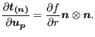

Next: Tangent contact stiffness Up: Face-to-Face Penalty Contact Previous: Weak formulation Contents
The traction excerted by the master face on the slave face at a slave integration point p can be written analogous to Equation (191):
| (270) |
For simplicity, in the face-to-face contact formulation it is assumed that within an increment the location of the projection of the slave integration points on the master face and the local Jacobian on the master face do not change. Consequently (cf. the section 6.7.5):
 |
(271) |
and
 |
(272) |
which leads to
|  | (273) |
This is the normal contact contribution to Equation (269).